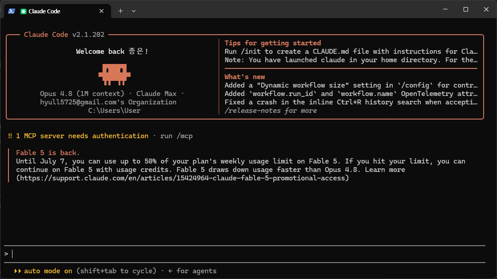
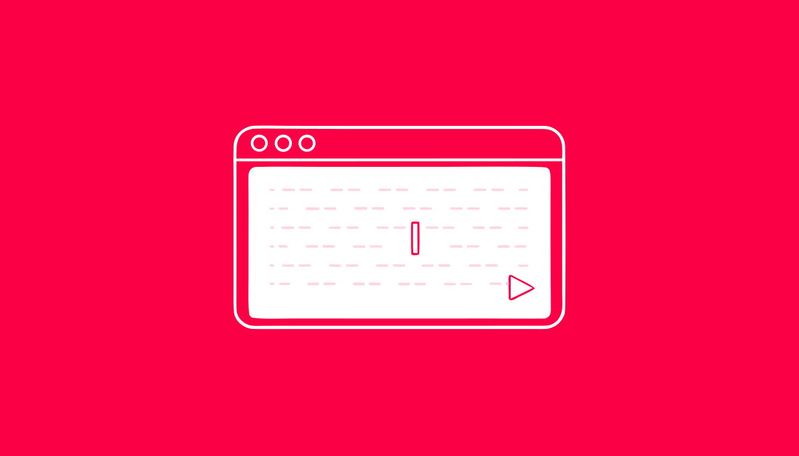
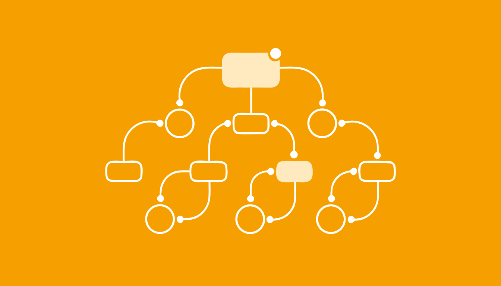
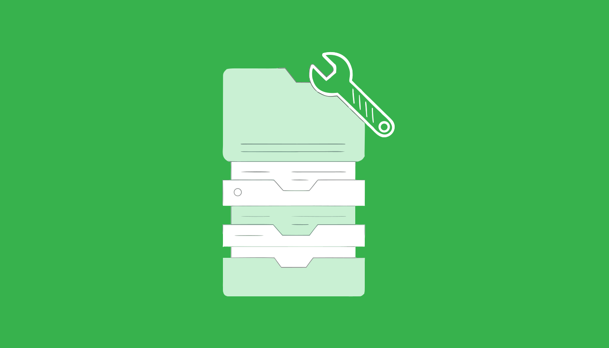
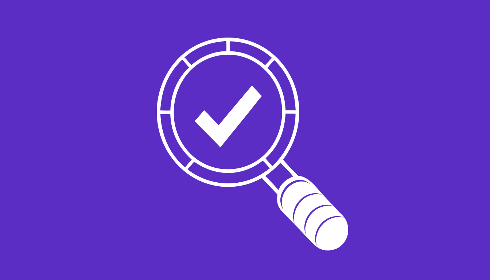
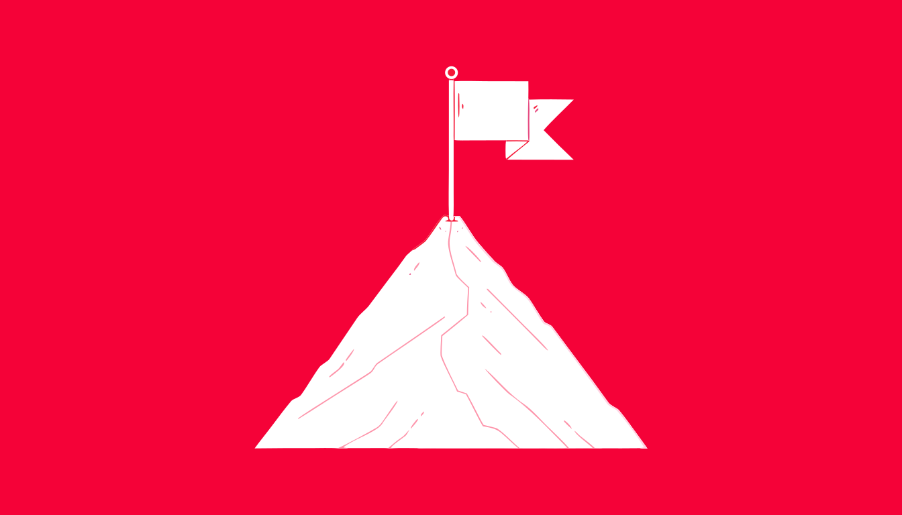

이해 → 설치 → 첫 실행 → 워크플로우 → 직무 응용 → 정착까지, 하루 동안 스스로 해내도록 설계된 과정입니다.

각 단계를 눌러 교안으로 이동하세요. 1단계(설치)부터 8단계(현업 적용)까지 순서대로 진행합니다.
단계별로 따라 설치. 탐색기 주소창 실행법 포함. 목표는 claude --version 성공.
과정 목표, 기본 규칙(더미데이터 원칙), AI의 한계 인식. 안전 사용 규칙을 진술한다.
GUI/CLI·터미널, AI 에이전트, 채팅과의 결정적 차이(내 파일 직접 조작·자동화).

작업폴더·실행·로그인, 모델/토큰 절약. 지정 폴더에서 실행하고 기본 요청을 해낸다.

탐색→계획→구현, Plan 모드, 계획 검토·수정. 계획을 1회 수정한 뒤 산출물을 완성한다.

여러 파일 정리·요약·변환, 간단 도구화(더미데이터). 반복 업무 흐름을 설계한다.

결과 검증 습관, 오류 대응(설치오류·화면 캡처 질문). 오류/한계 상황에 대처한다.

개인별 "내 업무 적용 1가지" 액션플랜. 현업 적용 과제 1건을 정의한다.
설치 이후 단계. Superpowers·Humanizer·agentmemory 등 확장 스킬을 설치법·원리·장단점·예시로.
실습자료/ 폴더(교육신청명단·만족도설문·수료자명단)